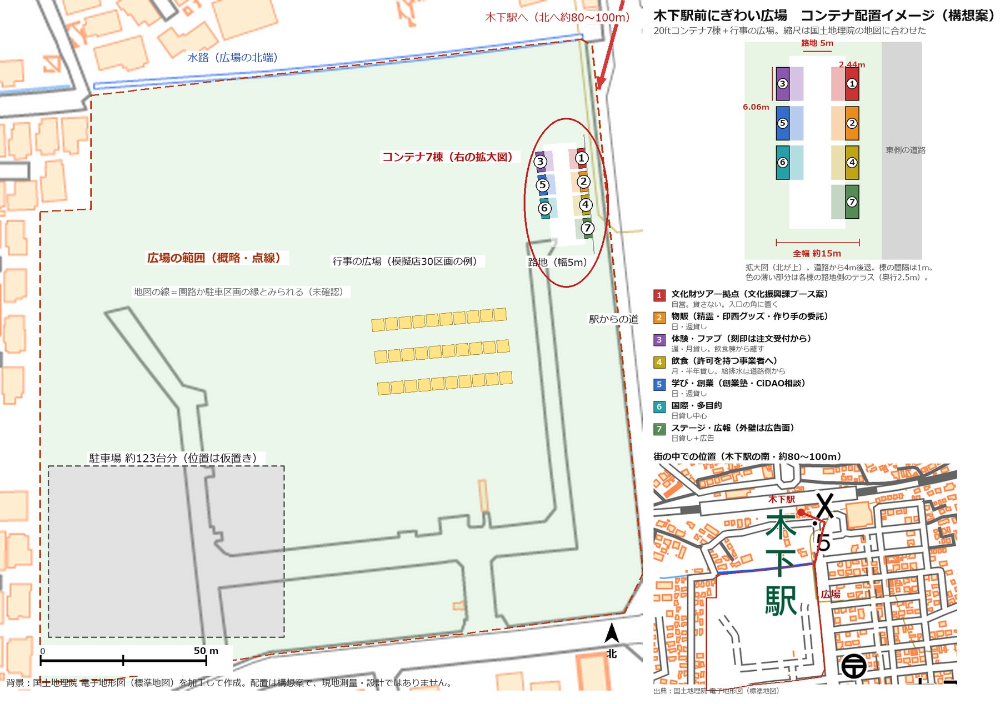
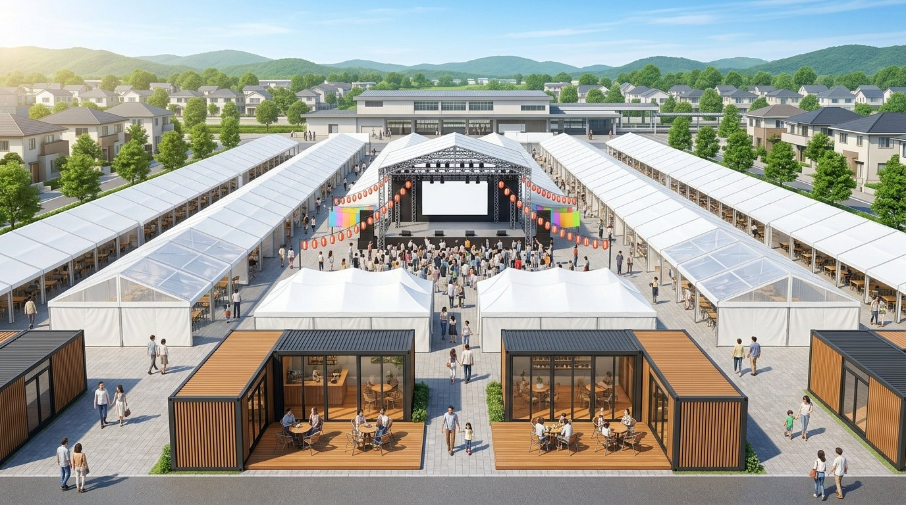

テーマ：文化財を入口にした市民ガイドと学びの循環 ／ 2026-11-09 下書き・2026-11-10 更新（6W3H・確認事項・拠点の結論） ／ 元資料：統合A 詳細計画
時間軸：現在 → 創業時 → 将来
経験・経歴／興味や価値観／スキルや資格
伸びしろ／足りない知識／経営資源の確保
どんな仕事／何が楽しい・満足か／貢献・仲間・自画像
誰に → 何を → どうやって（いくらで・どこで）→ 販売促進
属性・ライフスタイル／ターゲットの「不」（不満・不足・不便・不安 など）
| ターゲット | 属性 | 「不」 |
|---|---|---|
| ① 参加者 | 印西市の文化財を知らない大人と子ども／海外からのインバウンド観光客。ニュータウン住民と旧市街の市民を含む。年齢・性別、インバウンドの人数・来る時期は 未確認 | 不足：文化財を知らない（50件を知る人0人） 不便：どこにあるか、どう行くかわからない |
| ② ガイド役になる市民 | 18歳以上（人材バンクの登録条件） | 不安：知識が無いと案内できない 不足：活躍の場が無い |
| ③ 所有者・文化振興課 | 武蔵屋の関係者、課の担当者 | 不安：見学者が増えると建物や保存会に負担が出る 不足：来訪の記録が無い |
提供する価値と買う理由／競合との差別化
提供するもの
参加する理由（「不」の解消）
知らなかったものを現地で確かめられる／知識が無くても案内役になれる／案内した記録が残る
差別化
既存の印西ふるさと案内人協会（1999年設立・会員約20名）は経験者による案内。統合A は知識が無い人が、教材を手にやりながら担い手になる入口。
競う形ではなく、協力先として聞き取りから始める。
価値とのバランス／価格戦略
どんな場所／直販か代理店か
知ってもらう作戦／かかる労力・費用・時間
| 手段 | 労力・費用・時間 |
|---|---|
| CiDAO の提案ページ（登録済み／投票締切 12/31／実施予定日 2027-01-01） | 登録済み。費用0円 |
| 11/14 木下駅前ワークショップ第2回で市の担当者・参加者に話す | 参加の時間のみ（申込済み） |
| 印西ふるさと案内人協会への聞き取り | 20〜30分／回。費用0円。個人名義・未送信 |
| CBI の SNS・人材バンク | 既存の仕組みを使う（1回の告知にかかる時間は自分で見積もる） |
| 試行の記録（人数・感想）を次の告知に使う | 記録用紙1枚＋集計（時間は 未確認） |
ヒト・カネ・モノ・時間と情報
家族や友人の理解／サポートしてもらう内容／仕入先や提供元
| 相手 | サポートしてもらう内容 | 状態 |
|---|---|---|
| CBI のメンバー・代表 | 協力先：CiDAO・A4レポート・3D地図の使用の了承、試行への参加、人材バンクの案内。CBI の名前を使うかも決める | 了承は未確認 議題に出す時期は未決 |
| 印西ふるさと案内人協会（会員約20名） | 現地の知識、ベテランガイド、見学了承の通り道 | 聞き取り文は下書き済み・未送信 |
| 武蔵屋の関係者（所有者・aebe・保存会） | 見学の了承（「保存会のボランティアへの配慮」の意見あり）。事業主の見立て：aebe でランチをする形なら了承してもらえるかも。武蔵屋の説明は家主か、こちらのガイドが行う | 見立てのみ。実際の了承は未確認（aebe・家主へ相談） |
| 寺院（十一面観音） | 拝観の了承。文化振興課との調整が要る（事業主 11-09） | 未確認（課と調整） |
| 文化振興課 | 写真・解説の利用許可、紹介・橋渡し（同行・共同はしない） | 8/19 に依頼メール。返信待ち |
| 市民活動推進課・公民連携推進室 | 協働事業の事前相談（必須）、木下WSの情報 | これから |
| 仕入先・提供元 | 印刷（コンビニ）。精霊グッズを N's factory に発注する場合は利益相反の手続きが先 | 発注は未定 |
必要な資金と自己資金の目標額／借入先／返済
助成の順序 案
有料にする場合：旅行業の登録／収益事業の扱いを確認
事業の拠点／必要な設備や道具
短・中・長期／1日・1週間の時間／調べる内容と濃淡／スキルアップ
| 期間 | 内容 |
|---|---|
| 短期（〜2月） | 11/14 木下WS第2回／11/15・12/6・12/13 創業塾／11/29 か 12/2 個別相談（旅行業・収益事業・個人名義の申請可否）／協会への聞き取り／試行1回目（12〜1月） |
| 中期（2〜6月） | 試行3〜5回（場所を変える）／ファンドの手引き確認／協働事業の事前相談 |
| 長期（2027年度〜） | 助成金に応募／協働事業の提案（2027年4〜6月）／開始 2028年4月 |
調べる内容（濃い順）
①③④を1枚に短くまとめたもの
創業を思い立った理由
私ができる理由
元海上自衛官（勤続25年・2024年4月退職）。N's factory の運営（製作・販売・経理）、カルチャースクール講師、市民アカデミー受講、CBI 会計担当。CiDAO とA4レポート50件が手元にある。
個人として書く。CBI では会計担当で代表ではない。
印西市の文化財を知らない大人と子ども、海外からのインバウンド観光客。ガイド役の市民（18歳以上）
市民ガイドがA4レポートを手に木下を歩く約90分と、ガイド体験。知識が無くても始められ、案内された人が次の担い手になる
試行は無料。将来は1人500〜1,000円の想定。有料化は許認可・税の確認後
木下のまち歩きで直販。雨天は武蔵屋の屋内。申込は CiDAO の提案ページや告知経由
CiDAO の提案ページ、CBI の SNS、市の場（木下WS）、人材バンク
誰が・誰に・何を・なぜ・いつ・どこで／どのように・いくらで・どれだけ（個人として・2026-11-10 更新）
印西市の文化財を知らない大人・子どもと海外からの観光客を、市民ガイドが A4 レポートを手に木下で案内し、案内された人が次のガイドになる、循環型の学びの事業。CiDAO はそのための道具。
| 6W | ||
|---|---|---|
| Who 誰が | 事業主＝個人（祐樹）。企画・進行・ガイド・記録・費用の負担まで。CBI は協力先（CiDAO・A4レポート・3D地図の使用、メンバーの参加）。協力者：印西ふるさと案内人協会（約20名）／武蔵屋の関係者／寺院／文化振興課（橋渡しまで）。ガイド役は参加者から育てる | CBI 内の記録・協力者の了承は 未確認 |
| Whom 誰に | ①印西市の文化財を知らない大人と子ども ②海外からのインバウンド観光客 ③ガイド役になる市民（18歳以上） ④所有者・文化振興課（来訪の記録を返す） | 年齢・人数・来る時期は 未確認 |
| What 何を | 市民ガイドによる木下の文化財まち歩き（約90分）と、ガイド体験。道具：A4レポート50件・2D／3D地図・スマホ翻訳・ガイド支援アプリ・人材バンク。来訪の記録を残す | 案試行は無料 |
| Why なぜ | 11/3 の催しで「50の文化財を知る」人が0人（分母は未確認）。市のガイド制度は調べた範囲で見つからず、民間の協会が実在。文化財は木下に最も集まる。 自分の思い | 事実＋未確認 |
| When いつ | 11/14 木下WS 第2回／11/15・12/6・12/13 創業塾／11/29 か 12/2 個別相談／試行1回目：12〜1月→試行3〜5回（2〜6月）→助成金（2027年度）→協働事業の提案（2027年4〜6月）→開始 2028年4月 | 案 |
| Where どこで | 木下のまち歩き。拠点候補：①木下南口・骨董市の通りの店舗 ②木下駅前にぎわい広場のコンテナ。立ち寄り：武蔵屋・十一面観音・木下貝層・木下河岸跡・吉岡まちかど博物館（上宿古墳は大森のため除外） | 歩く順・距離・所要時間／拠点の貸主・賃料 未確認 |
| 3H | ||
| How どのように | 約90分。受付と事前の問い→地図で位置確認→A4レポートを手に歩く→参加者が1項目を案内→感想と事後の問い・人材バンク案内。雨天は武蔵屋の屋内。海外客：まず木下で完結し、広げるときは2拠点目へ車か自転車。広報：CBI の SNS・動画・提案ページ・市の場 | 2拠点目の鉄道・バス 未確認 |
| How much いくらで | 試行1回の実費は仮で約300〜6,000円（印刷約300円・会場0〜5,000円・保険0〜700円）。個人の自己資金。収入は取らない（有料化は許認可・税の確認後）。将来：1人500〜1,000円の想定。拠点の賃料・敷金は未確認 | 観光客の支払い意思の調査は 見つからない |
| How many どれだけ | 試行1回：参加3〜5人＋ガイド役1〜2人。次へ進む条件：参加3人以上→「次は案内したい」人が1人以上。記録：参加人数・居住地区・事前事後の認知・ガイド体験の人数・人材バンク登録数 | 案 |
優先度 A＝試行の前に必須／B＝試行と並行して／C＝後でよい。確信度は現時点の見立て
| # | 確認する事項 | 誰に・どう／時期 | 状態 |
|---|---|---|---|
| 1-1 | 武蔵屋の見学を、所有者・aebe・保存会が了承するか（aebe でランチをする形なら、の見立て） | aebe・家主へ事業主が相談／12月前 | 低 |
| 1-2 | 十一面観音（寺院）の拝観の了承 | 文化振興課と調整／12月前 | 未確認 |
| 1-3 | 文化振興課の写真・解説の利用許可 | 8/19 に依頼メール送付済み | 返信待ち |
| 1-4 | CiDAO・A4レポートを個人の事業で使うことの CBI 内の記録 | CBI のメンバー・代表／試行の前 | 口頭は解消・記録は 未確認 |
| 1-5 | 印西ふるさと案内人協会の実態・連携の意向 | 聞き取り（個人名義）。質問票は下書き済み・未送信／11月中 | 未確認 |
| # | 確認する事項 | 誰に・どう／時期 | 状態 |
|---|---|---|---|
| 2-1 | 有料ガイドに旅行業の登録がいるか／料金を取ると税・収益事業はどうなるか | 個別相談（11/29 か 12/2） | 低 |
| 2-2 | 個人名義で、まちづくりファンド・協働事業に申請できるか（団体が対象とみられる） | 個別相談・市民活動推進課 | 未確認 |
| 2-3 | ファンド第21回は 11/5 に防災体験会で回答済みか（スタートアップ枠は1団体1回） | CBI 内／11月 | 確信度：中 |
| 2-4 | 日本政策金融公庫の融資（創業塾の証明書で特別利率）を使うか | 個別相談 | 確信度：中 |
| 2-5 | CBI の口座の開設時期／個人の事業と CBI のお金を混ぜない扱い | CBI 総会後 | 未確認 |
| 2-6 | 協働事業の対象外条件（他の助成を「受ける予定」）に当たらないよう事業を分ける | 市民活動推進課の事前相談（必須）／2027年春 | 要点は確認済み |
| # | 確認する事項 | 誰に・どう／時期 | 状態 |
|---|---|---|---|
| 3-1 | 木下のまち歩きの歩く順・距離・所要時間（今は直線距離のみ） | 現地で実測／12月前 | 見つからない |
| 3-2 | 安全：道路・足元（木下貝層は屋外）・トイレ・保険・歩行が難しい人への配慮 | 保険の見積もり・下見／12月前 | 未確認 |
| 3-3 | 拠点：①骨董市の通りの店舗 ②広場のコンテナ。貸主・賃料・使用条件・市の方針。「周辺商店街＝骨董市の通り」は事業主の情報で市の資料では未確認 | 11/14 WS で市の担当者に／不動産・商店街 | 未確認 |
| 3-4 | 木下駅前にぎわい広場の公募型プロポーザルの時期・結果・受託者 | 市の資料（ページが404）・11/14 WS | 未確認 |
| 3-5 | 海外客：木下から2拠点目への鉄道・バスの便、インバウンドの人数・来る時期 | 時刻表・市の観光資料／試行の後でもよい | 未確認 |
| 3-6 | 3D 地図の読み込み上限（11/3 は1日50万件を超えた） | CBI／試行の前 | 対策あり（2Dと紙が主） |
| 3-7 | 市の「散策MAP」の所在（歩く経路の元） | 事業主が見た場所を教える | 事業主に聞く |
| # | 確認する事項 | なぜ・どう | 状態 |
|---|---|---|---|
| 4-1 | 名義の整理：計画は「個人」だが、11/10 の SNS 動画は CBI の3媒体から投稿した | 個人の事業と CBI の名前の混ざり方を後で説明できるように。事業主が整理・CBI 内で共有 | 要判断 |
| 4-2 | ナレーション音声（edge-tts・Nanami）の公開利用が規約上可か | 規約上あいまい。投稿済み。続けるか替えるか事業主が判断 | 低 |
| 4-3 | BGM（パッヘルベル「カノン」Kevin MacLeod／CC BY 3.0）のクレジット | 投稿文に入れて投稿済み | 確認済み |
| 4-4 | 木下駅の位置（転載値・数百mの誤差の可能性）と、文化財50件の座標（住所から求めた） | 件数の境目が動きうる。国土地理院などで確認／次回更新時 | 確信度：中 |
| 4-5 | 精霊グッズなどを N's factory に発注する場合の利益相反の手続き | 事前承認・相見積もり・議事録（事業主は議決に加わらない）／発注の前 | 発注は未定 |
観光ツアーの拠点と、他のコンテナの運営（貸出・管理・広告）を組み合わせる案。個人としての検討案で CBI の決定ではない。金額は調べた範囲の相場から立てた案。詳細：概要版／詳細版（全19節）／11/14 質問票


コンテナハウスを中心に、全天候型テントを広場いっぱいに展開し、中央にコンサートや祭りに使うステージを置く構想の雰囲気。案 テントはイベント日だけの仮設が現実的。
| 棟 | 用途 | 運営・貸出の型 |
|---|---|---|
| ① 文化財ツアー拠点 | 受付・集合・A4レポート・3D・ガイド帳アプリ・グッズ委託販売 | 自営（貸さない）。文化振興課の協力は未確認 |
| ② 物販 | 精霊・印西グッズ・革小物・作り手の委託販売 | 日・週貸し（ポップアップ） |
| ③ 体験・ファブ | 刻印体験（刻印済み品の注文受付から） | 週・月貸し。飲食棟から離す |
| ④ 飲食 | 許可を持つ事業者が営業 | 貸出のみ（月・半年）。自営しない |
| ⑤ 学び・創業 | 講座・創業塾の卒業生の試し出店・CiDAO相談 | 日・週貸し |
| ⑥ 国際・多目的 | 外国人向けの案内・交流 | 日貸し中心 |
| ⑦ ステージ・広報 | イベント・掲示・広告面 | 日貸し＋広告 |
| 項目 | 内容 | 状態 |
|---|---|---|
| 広場の活用事業 | 公募型プロポーザルで2026-06-30 に JTB千葉西支店が受託候補者に特定。契約の締結・業務範囲・協力事業者の枠は未確認 | 事実（市の公表） |
| 設置費 | 事業者が負うと賃料（月3〜4万円前後）では回収できないため、市の負担・市の所有が前提。撤退後は市が転用。使用料だけでは回収に約7〜14年 | 案・便益は未測定 |
| 価格帯 | 月貸し3.5万円・半年3.2万円・飲食棟4.5〜6万円・週1.2万円・日5,000円前後 | 案（根拠は2件ほど） |
| 進め方 | 設置なしの試行 → 1棟 → 3〜5棟 → 飲食棟。各段階で止められる | 案 |
| 市の担当者の視点 | 公平性・お金・リスク・実現性・説明責任の想定問答31項目（詳細版 §16） | 作成済み |
| 棟を市の関係課に割り当てる案 | 元の駅前常設マルシェ構想（2026-06-22 の整理）にも「各コンテナ＝市役所各課主管」の対応表がある。その延長として、経済振興課の配分を増やして市のPRに使い、文化振興課・防災課（総務部）・市民活動推進課などと「課＋団体＋民」のコラボ棟にする。総額は減らないが、負担の根拠が課の事業目的に結びつく。市長の所信表明（「未来を“とも”につくる」・市民共創型・公民連携）、公約ロードマップ No.114（木下駅前にぎわい広場に複合施設を整備。R8は木下構想の作成・プレイヤー探し・社会実験・暫定利用の準備、R9に公募・暫定利用の開始）、施政方針・総合計画に沿う。「関係課が関係団体とコラボ」の文言そのものは無い | 案・課の意向は未確認 |
| 防災拠点としての条件（避難場所・浸水想定） | 広場は避難場所に指定されておらず、防災設備の記載もなく、洪水の浸水想定区域内（想定最大で3〜5m級）。水害時は拠点にできず、事前に避難・撤収する前提。水害以外（地震・停電）の用途に限る。水害時の最寄りの避難先は木下小学校（約560m）・印西中学校（約750m）。地面の水はけが悪い場合の施工（嵩上げ基礎・設備を高所に・排水設計・地盤調査）も要る。市の防災課に確認 | 事実（市の公表・国土地理院）・最新は未確認 |
| テント・太陽光・災害時電力 | 全面を覆うのは現実的でなく、ステージ周辺と動線沿い約2,000㎡をイベント日だけ仮設（追加1日の下限ベースで約40〜100万円/日）。固定式の屋根に太陽光（約150kWで約3,000〜4,500万円）と蓄電池を載せれば、災害時の電力にも使える（防災課）。概算は根拠が薄く、実見積もりが要る。防災課・経済振興課・文化振興課が大きく関与 | 案・単価は未取得 |
| 精霊グッズ・委託販売 | 市に著作権を移さず利用許諾（§18）。いんザイ君グッズの委託販売・棚貸し（§19） | 案・権利者は未確認 |
11/14 の木下ワークショップで聞くこと：常設の建物の計画と土地の種別／受託候補者の契約・協力事業者の枠／設置費を市が持てるか・撤退時の協定／日・週・月・半年の貸出。